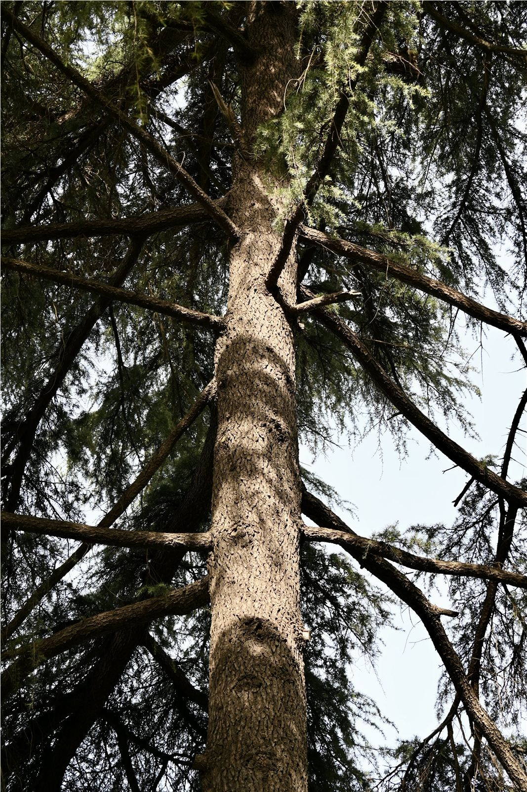
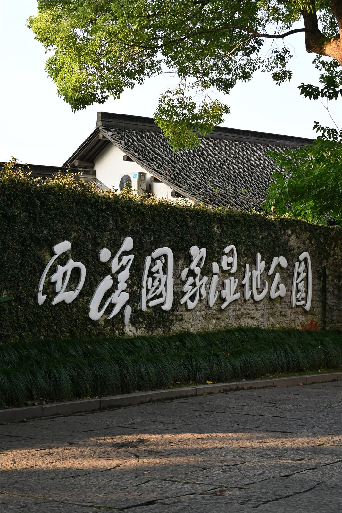
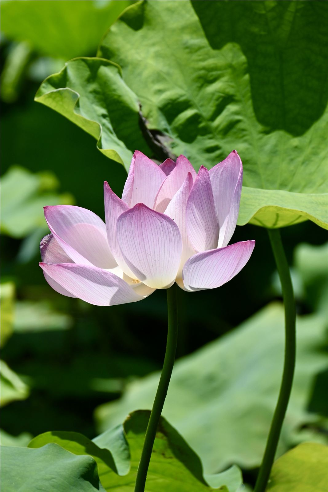
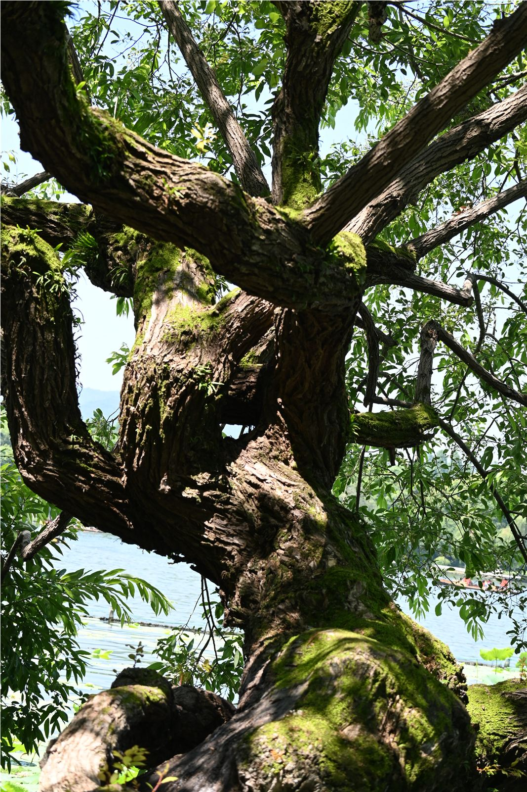
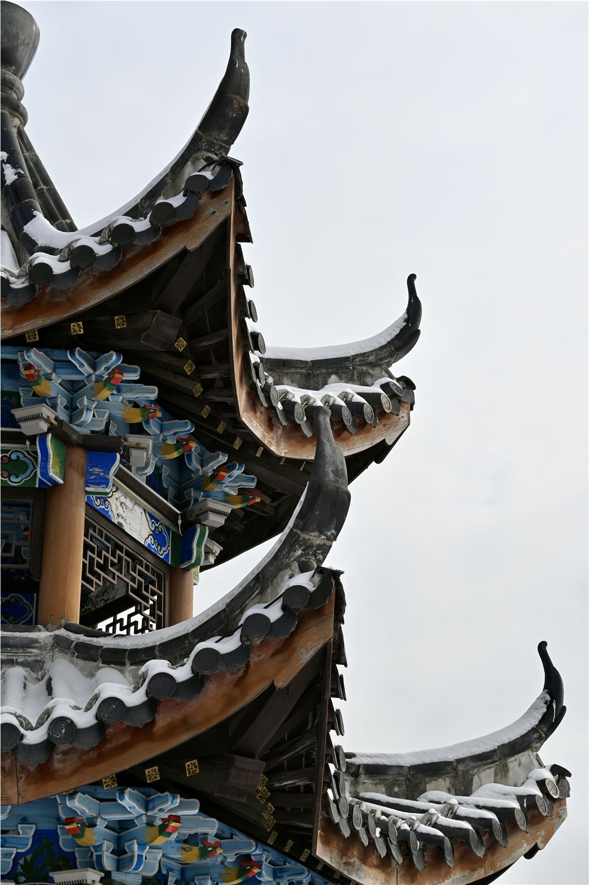
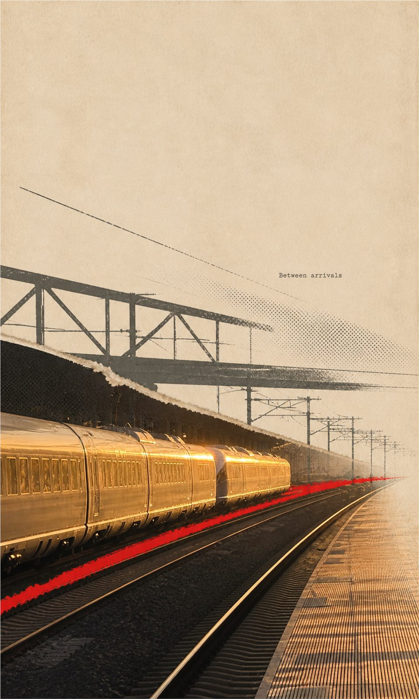

选择留下真正改变叙事的画面
01 / LIGHT
先看光，
先看光，
再决定拍什么。
我喜欢那些没有明确主角的时刻：一束夕阳穿过芦苇，一片荷叶把花托到亮处，树干的纹理在下午突然变得清楚。
画面不是被找到的，
它是在停留中慢慢出现。

02 / WALKING六张照片，
六张照片，
组成一段路。
远景交代地点，中景留下人与空间的关系，细节保存当时的触感。单张追求完整，一组照片需要呼吸。






BEFORE / AFTER / BETWEEN
03 / EDITING
拍摄之后，
01
02
03
阅读《由树丈量》的创作过程 ↗
拍摄之后，
重新安排观看顺序。
我会删去重复的画面，寻找一组图片内部的速度。有时也会加入纸张、网点和一条突兀的红线，让照片里原本微弱的关系更清楚。
排序用远近、明暗和方向建立节奏
书写补上照片无法独自说出的部分